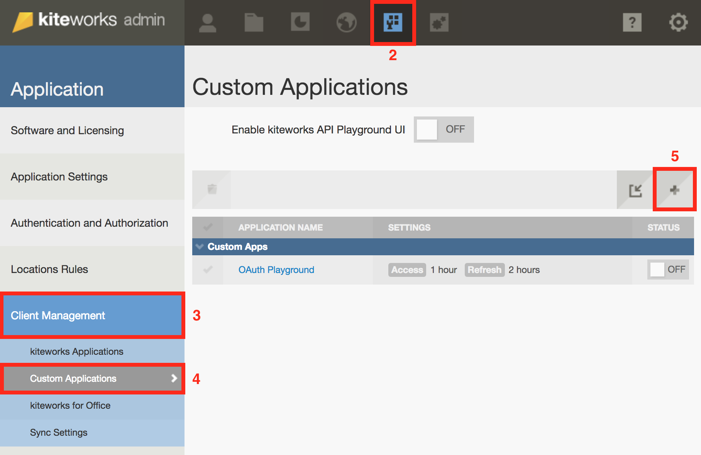
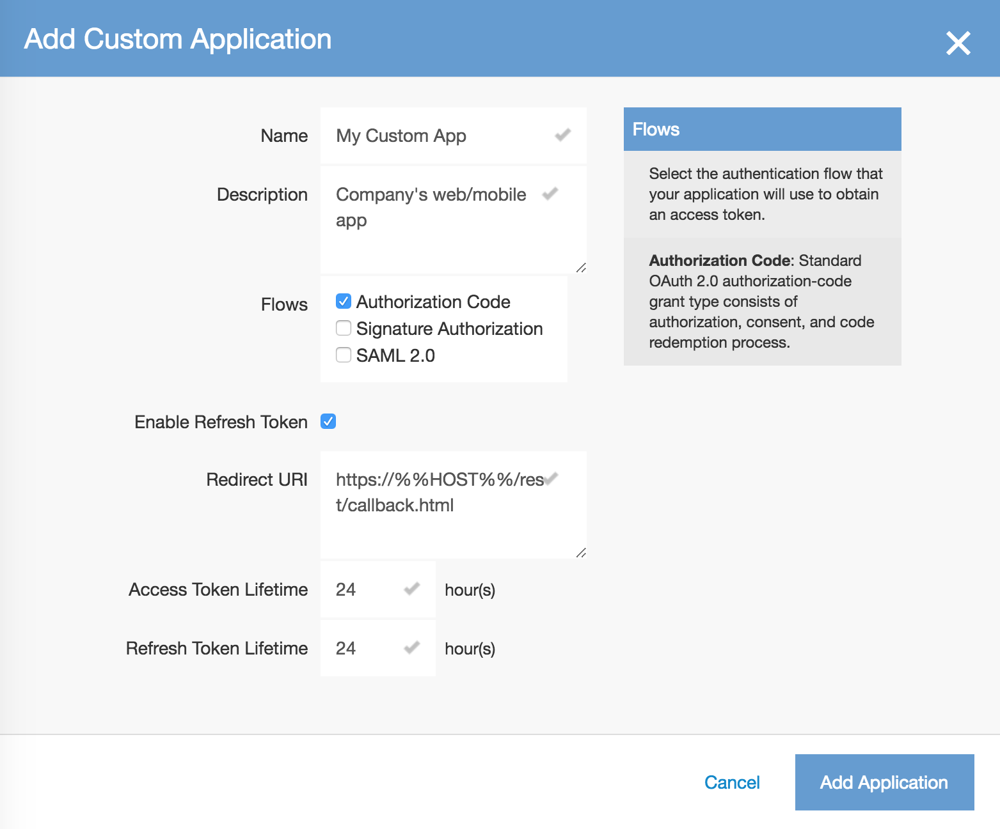
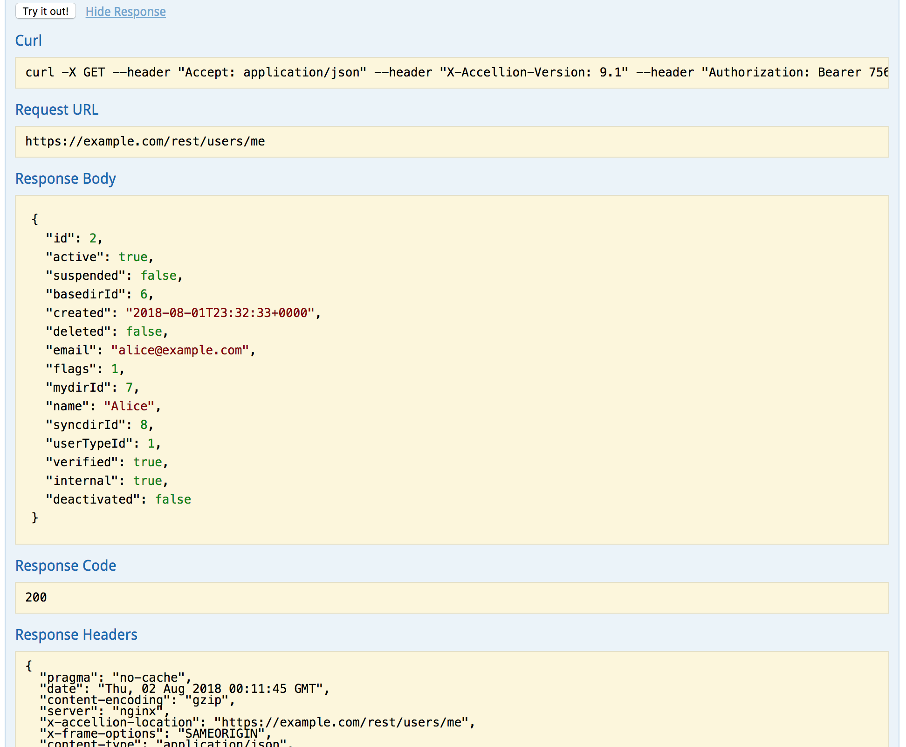

Introduction
Welcome to Accellion's API Guide.
Our RESTful Enterprise API enables you to quickly develop apps that leverage the power of the Accellion Platform. Developers can build custom apps tailored to specific industry and business use cases, as well as integrate with existing IT infrastructure.
We have sample code available in PHP. Over time, we will add sample code in other languages. You can view code samples in the dark area to the right.
Quickstart
Prerequisites
You should be an experienced developer and have an understanding of the following concepts and technologies:
- OAuth 2.0
- JSON data format
- HTTP methods and status codes
- REST APIs
Get an Accellion instance
You will need an Accellion instance to get access to the API. If you don't already have one, please click on the button below:
Setup your first custom app
If you already have an Accellion instance:
- Sign in to the Admin interface at https://[hostname]/admin. Replace [hostname] with your Accellion instance hostname.
- Click on the Application tab icon using the top navigation bar.
- Click on Client Management in the left navigation panel. NOTE: If you see the Custom Applications section under Client Management, you have everything you need to get started. Otherwise, please email support@accellion.com to request API access for your instance.
- Click on Custom Applications under Client Management.
- Click on the + button to add your custom app. Further steps below the screenshot. 
- Fill up the Add Custom Application form as per your needs. Our example app will use standard OAuth 2.0 Authorization Code flow with refresh token. NOTE: If you want to test this app in the playground, set the Redirect URI to https://%%HOST%%/rest/callback.html. After testing, this should be changed to your app's own redirect URI. 
- Click on the Add Application button.
- Copy and save the Client Application ID and Client Secret Key from the popup to a secure location. NOTE: This is your only chance to copy the secret key.
- Click OK. Your custom application is now created and you are ready to start experimenting in the playground.
Setup the playground
- On the Custom Applications page in Admin interface, turn the API playground ON. Click OK in the confirmation popup.
- Click the "?" icon near the top right.
- Click "Developer Documentation". This should open the playground in a new tab.

Get a token
- Once the playground has loaded (resource list has been fetched), click the "Get a token" button near the top right.
- In the popup form, Authorization Code grant type is selected by default. Enter the Client App ID and Client App Secret Key of the custom app you created in the previous section.
- Click "Authorize and Get Token".

- Click "Grant Access" in the new End-User Authorization popup. The playground will receive a token from the Accellion server and display it in the top right. You are now ready to make your first API call from the playground.
Call an endpoint
Now that the playground has the access token, it is time to perform a basic API call.
On the playground webpage, you will see several categories like activities, admin, etc. Clicking on a category name expands it, showing all the endpoints in it. The categories are arranged alphabetically.
Scroll down and click the users category.

The endpoints are color coded based on the HTTP method. To the right of each endpoint, there is a brief description of its purpose.
Click on the endpoint GET /rest/users/me to see more details about it.

Click the Try it out! button. In the Response Body section, you will see a JSON object of the users class, and it will contain the current user's information.

Authentication
Signature Authorization flow
Accellion offers Signature Authorization flow for trusted apps where user interaction is impossible or undesirable. This is mostly applicable when some backend servers in your corporate network need to communicate with Accellion or when your app handles user authentication on its own.
<?php
// --- Configuration Section ---
$kiteworks_hostname = 'YOUR-SERVER.DOMAIN.ORG';
$client_app_id = 'YOUR-CLIENT-APP-ID';
$client_app_secret_key = 'YOUR-CLIENT-APP-SECRET-KEY';
$signature_key = 'YOUR-SIGNATURE-KEY';
$user_id = 'YOUR-USER-EMAIL-TO-BE-USED-FOR-API-INTEGRATION';
$api_scope = 'YOUR-CLIENT-APP-SCOPES'; // e.g. 'folders/* files/* mail/*'
$redirect_uri = 'YOUR-REDIRECT-URI';
// --- Generate Signature Based Auth Code ---
$timestamp = time();
$nonce = rand(1, 999999);
$base_string = "$client_app_id|@@|$user_id|@@|$timestamp|@@|$nonce";
$signature = hash_hmac("sha1",$base_string, $signature_key);
$auth_code = base64_encode($client_app_id)."|@@|".base64_encode($user_id)."|@@|$timestamp|@@|$nonce|@@|$signature";
// --- Initialize CURL Parameters Section ---
$access_token_endpoint = "https://$kiteworks_hostname/oauth/token";
$postData = "client_id=" . urlencode($client_app_id) . "&";
$postData .= "client_secret=". urlencode($client_app_secret_key) . "&";
$postData .= "grant_type=authorization_code&";
$postData .= "code=". urlencode($auth_code) . "&";
$postData .= "scope=". urlencode($api_scope) . "&";
$postData .= "redirect_uri=". urlencode($redirect_uri);
// --- Make CURL request ---
$ch = curl_init();
curl_setopt($ch, CURLOPT_URL, $access_token_endpoint);
curl_setopt($ch, CURLOPT_RETURNTRANSFER,1);
curl_setopt($ch, CURLOPT_POST, 1 );
curl_setopt($ch, CURLOPT_POSTFIELDS, $postData );
$response = curl_exec( $ch );
$curl_error = curl_error($ch);
$error_no = curl_errno($ch);
curl_close($ch);
// --- Print Response ---
if ($curl_error) {
print "Curl error $error_no: " . $curl_error."\n";
die();
}
else {
$arr_response = json_decode($response, true);
print_r($arr_response);
}
?>
Steps in Signature flow
- Calculate authorization code using the following parameters:
- Signature Key and Client ID: These were displayed on the Admin interface when the custom app using Signature flow was created.
- Email address of the user for whom the app needs an access token.
- Current timestamp: The code will remain valid for an hour after creation.
- Nonce: A random integer between 1 and 999999.
- Fetch access token from Accellion's token URI using the following parameters:
- Client ID and secret: Displayed on Admin interface when app was created.
- Grant Type: This should be the string “authorization_code” for the token request to work.
- Scope: This is the scope of the API services that the client application wants to access. This should be a space-separated string that consists of the name of the services that the application requires. The requested scope must be a subset of the client application’s registered scope in the server.
- Redirect URL: This is exactly the same redirect URI as registered with the server.
- Code: This is the authorization code calculated in step one.
Responses from server
Once these two steps are complete, if there are no errors for the POST request, the server will return a HTTP response 200 OK. The body for the response will be in JSON format and will include the following:
- access_token: This is the token that will be used for all requests to the API.
- expires_in: This is the number of seconds after which the access token will expire.
- scope: This is the scope for which this token is valid.
- refresh_token: This is a token that can be used to get a new access token without going through the first step of authorization.
- token_type: This will be set to “bearer” because that is the type of token.
If there are problems with the request, the server will return a HTTP 400 bad request. The body of the response will contain error information in JSON format. Here are the possible values for the error code:
- invalid_client: This indicates that the client application authentication failed. This is likely because either the client ID and/or the secret key provided are incorrect.
- invalid_grant: This indicates that the user’s credentials are not valid.
- invalid_scope: This indicates that the requested scope in invalid or exceeds the previously granted scope.
- invalid_request: This indicates that the request is malformed, which usually means that there is a missing parameter that is required.
- unauthorized_client: This indicates that the client application is not authorized to use this flow.
Common Use Cases
<?php
// --- Generic helper function to make CURL calls based on the protocol ---
function jsonCurl($url, $json_data, $arr_params = NULL) {
$ch = curl_init();
curl_setopt($ch,CURLOPT_URL, $url);
curl_setopt($ch, CURLOPT_RETURNTRANSFER, true);
// Do not add POSTFIELDS for a GET request
if (!($arr_params && array_key_exists('protocol', $arr_params) && $arr_params['protocol'] == 'get')) {
curl_setopt($ch, CURLOPT_POSTFIELDS, $json_data);
}
if($arr_params && array_key_exists('header', $arr_params)) {
curl_setopt($ch, CURLOPT_HTTPHEADER, $arr_params['header']);
}
else {
curl_setopt($ch, CURLOPT_HTTPHEADER, array("Content-type: application/json"));
}
$response = curl_exec($ch);
$error = curl_error($ch);
$curl_http_code = curl_getinfo($ch, CURLINFO_HTTP_CODE);
curl_close($ch);
$arr_response = array();
$arr_response['response'] = trim($response);
$arr_response['error'] = trim($error);
$arr_response['curl_http_code'] = $curl_http_code;
return $arr_response;
}
?>
The following examples make use of the access token received in the Authentication section above to interact with the server.
On the right, we have a helper function that makes the actual HTTP call to the Accellion server. It takes in the endpoint URL, input data in the form of JSON and HTTP parameters in an array.
This function will be used in the following code samples for different use cases.
List folder contents
<?php
define('CONST_EAPI_VERSION', 10); // Put the latest API version in place of 9
$oAuthToken = "GET-OAUTH-TOKEN"; // Use the code in getOAuthToken.php to get the token
// --- Configuration Section ---
$folderId = 'YOUR-FOLDER-ID';
$kiteworks_hostname = 'YOUR-SERVER.DOMAIN.ORG';
$api_end_point = "https://$kiteworks_hostname/rest/folders/$folderId/children?deleted=false";
$headers = array("Content-Type: application/json",
"Accept: application/json",
"X-Accellion-Version: " . CONST_EAPI_VERSION,
"Authorization: Bearer $oAuthToken" );
// --- Passing additional information about protocol and headers to the generic helper function ---
$arr_params = [];
$arr_params['header'] = $headers;
$arr_params['protocol'] = 'get';
$postData = array(); // API uses GET protocol. Does not require POST data. Initializing for the generic helper function
$arr_capi_response = jsonCurl($api_end_point, json_encode($postData), $arr_params);
print_r($arr_capi_response);
?>
In Call an endpoint section above, you called GET /rest/users/me to retrieve basic information about the current user (yourself). One of the attributes returned was "syncdirId", which refers to your automatically created default "My Folder".
In this section, you will use the GET /rest/folders/{folder ID}/children endpoint to get the list of items (files and sub-folders) inside this folder.
In the code sample on the right, replace "YOUR-FOLDER-ID" with the value of "syncdirId" (or the ID of any other folder you have access to). Also, replace "GET-OAUTH-TOKEN" with the access token retrieved in the Authentication section, and "YOUR-SERVER.DOMAIN.ORG" with the hostname of your Accellion server.
Then, copy and paste the script on a machine that has PHP installed and run it. You will see the server response with the contents of your My Folder in JSON format.
Download file
<?php
define('CONST_EAPI_VERSION', 10); // Put the latest API version in place of 9
$oAuthToken = "GET-OAUTH-TOKEN"; // Use the code in getOAuthToken.php to get the token
// --- Configuration Section ---
$fileId = 'YOUR-FILE-ID';
$kiteworks_hostname = 'YOUR-SERVER.DOMAIN.ORG';
$api_end_point = "https://$kiteworks_hostname/rest/files/$fileId/content";
$headers = array("Content-Type: application/json",
"Accept: application/json",
"X-Accellion-Version: " . CONST_EAPI_VERSION,
"Authorization: Bearer $oAuthToken" );
// --- Passing additional information about protocol and headers to the generic helper function ---
$arr_params = [];
$arr_params['header'] = $headers;
$arr_params['protocol'] = 'get';
$postData = array(); // API uses GET protocol. Does not require POST data. Initializing for the generic helper function
$arr_capi_response = jsonCurl($api_end_point, json_encode($postData), $arr_params);
print_r($arr_capi_response);
?>
Next, let's use the GET /rest/files/{file ID}/content endpoint to get the contents of a file.
In the code sample on the right, replace "YOUR-FILE-ID" with one of the file IDs returned in the folder listing response (or the ID of any other file you have access to). Also, replace "GET-OAUTH-TOKEN" with the access token retrieved in the Authentication section, and "YOUR-SERVER.DOMAIN.ORG" with the hostname of your Accellion server.
You will see the server response with the contents of your file in the 'response' key.
Help
Please tell us how we can improve this guide for you.
Perhaps you would like to see code samples in a different language or for a different use case. Or maybe you need help figuring out how to solve your business problem using Accellion's API.
Send us an email at support@accellion.com